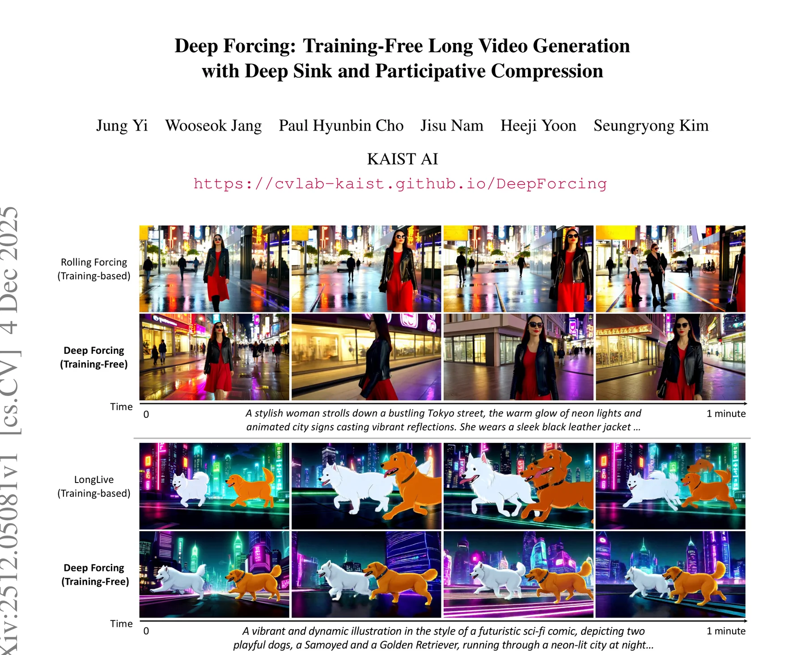
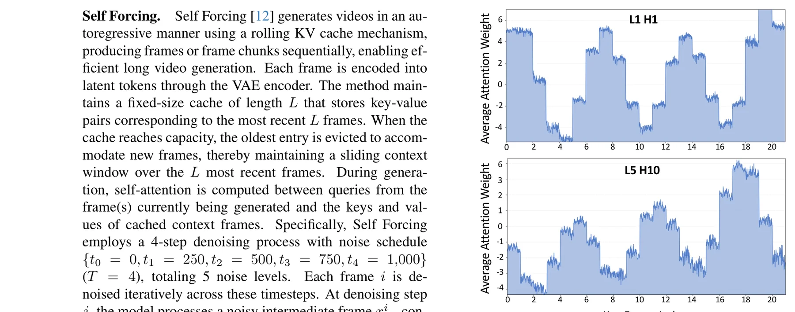
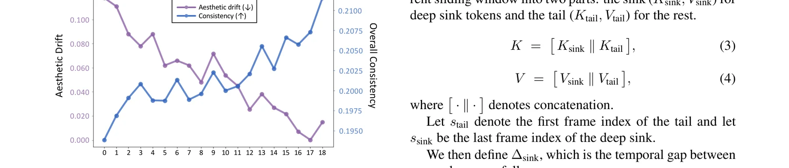
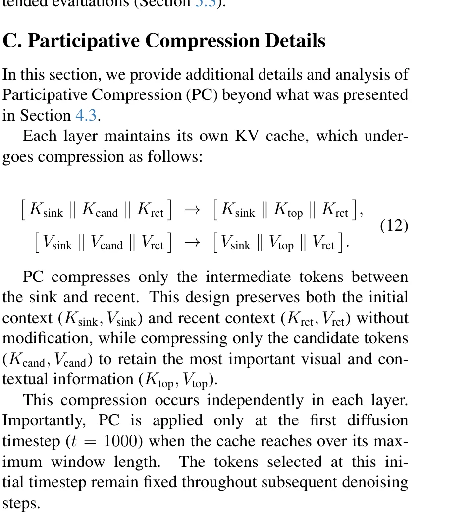
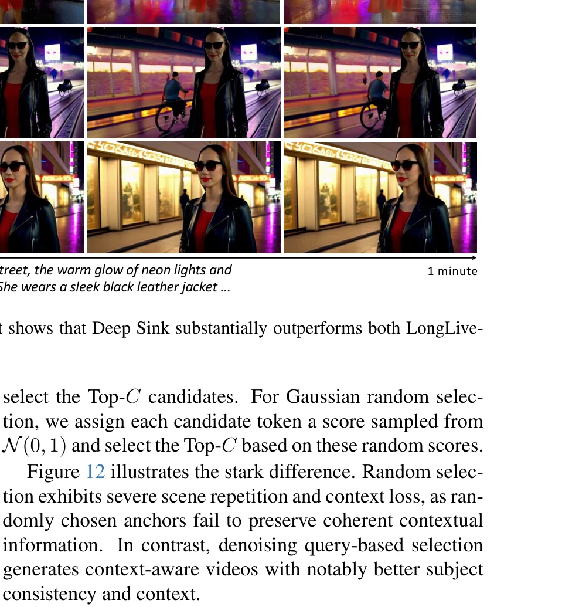
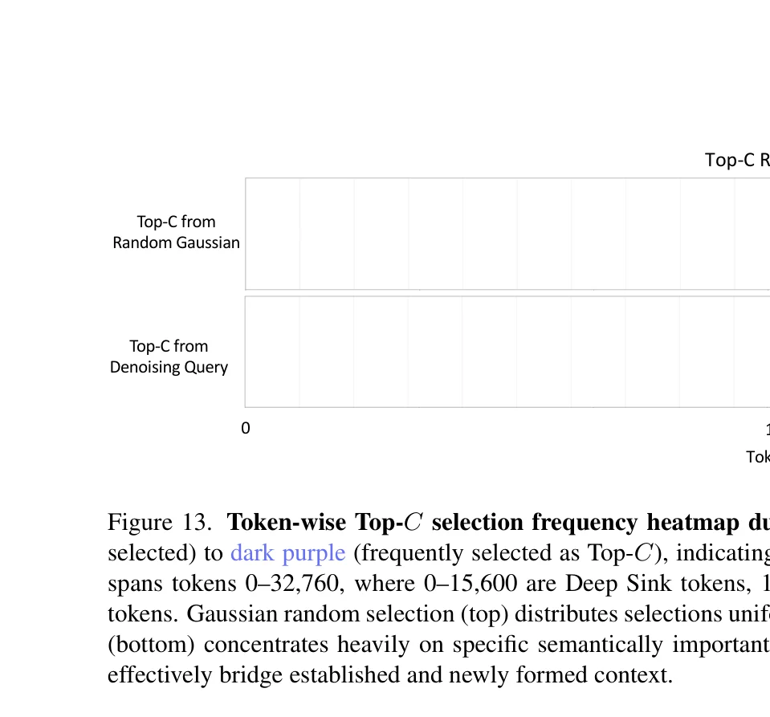

自回归长视频生成的根本困境：误差累积
自回归视频扩散模型（如Self Forcing）已经能够实现实时帧流式生成，在世界模型和交互式应用中展现出巨大潜力。然而，当生成时长远超训练时长（如从5秒外推到60秒）时，一个根本性问题浮现：误差累积。每一帧都依赖于之前生成的、可能不完美的帧，小误差逐步级联，导致色彩漂移、纹理模糊、细节消失。
现有方案的局限
训练型方案（Rolling Forcing、LongLive）通过模型蒸馏或微调来适应长视频生成，但代价高昂且引入运动约束。推理时的StreamingLLM式浅层attention sink（仅保留前几帧）在视频扩散模型中效果不佳——论文发现大多数注意力头对中间帧也分配了大量权重，远超传统认知。

Self Forcing在5秒视频上训练，推理时生成60秒甚至更长。模型从未见过自生成的退化上下文，导致推理时的误差模式与训练时的学习分布不匹配。这种train-short-test-long的不一致性是误差累积的根本原因。Deep Forcing的突破在于：不改变训练，而是通过智能KV缓存管理在推理时控制误差传播。
训练型方案（Rolling Forcing需要蒸馏、LongLive需要32 GPU-days微调）成本高昂且引入运动约束。Deep Forcing在预训练的Self Forcing上直接推理，不需要任何额外训练，既节省成本又保留了原始模型的动态运动生成能力。这解释了为什么Deep Forcing的Dynamic Degree（57.56）远超训练型方法（Rolling Forcing: 30.71, LongLive: 45.55）。
Deep Sink — 深层注意力锚定
在LLM领域，StreamingLLM发现模型倾向于将大量注意力分配给初始token（称为attention sink），仅保留这些token即可维持滑动窗口推理的稳定性。然而，当将这一机制简单移植到视频扩散模型时，效果远不如预期。
关键发现：不仅仅是初始帧
论文对预训练Self Forcing的注意力分布进行了系统分析。如Figure 4所示，以最后一帧生成时的query-averaged attention为例，不同层和注意力头表现出截然不同的模式：

关键观察：大多数注意力头不仅关注最初几帧，还对序列中间部分分配了可比的注意力权重。这意味着传统StreamingLLM式的浅层sink（仅保留3帧）远远不够。
Deep Sink的核心设计
基于上述发现，Deep Sink提出：将滑动窗口的大约一半（40-60%）分配给持久化的sink token。实验表明，当sink帧数从0增加到10以上时，美学漂移（Aesthetic Drift）显著下降，整体一致性（Overall Consistency）稳步提升。

无Sink（Sink=0）
帧230即出现明显退化，帧690质量完全崩溃。误差无约束累积
浅层Sink（Sink=3-4）
退化延迟但仍可见。参考LongLive/Rolling Forcing方案，不足以支撑60秒生成
Deep Sink（Sink=10-15）
退化被大幅抑制。40-60%窗口作为锚定。中间帧是关键锚点
传统attention sink理论认为只有初始token承担锚定角色。Deep Forcing的发现挑战了这一认知：视频扩散模型中，中间帧承载了与初始帧可比的注意力权重。这些中间帧可能编码了场景布局、主体外观和运动轨迹的中期记忆，丢失它们会导致全局语义漂移。这解释了为什么仅保留3帧的LongLive方案在60秒生成中仍然出现退化。
论文通过系统消融确定了最佳sink比例。Sink=0时质量崩溃最快；Sink=4-9时改善明显但不充分；Sink=10-15（40-60%）达到最佳平衡；Sink=18则出现过度锚定——早期帧被过度保留，导致重复生成（类似LLM中的degeneration）。这一非单调关系表明存在最优分配策略。
Temporal RoPE Adjustment — 修复时序断层
在3D视频DiT架构中，RoPE（Rotary Position Embedding）分别编码时间、高度和宽度维度。当Deep Sink将远古帧（如t=1）和当前帧（如t=200）放在同一上下文窗口中时，两者的时间维度RoPE编码存在巨大差距，导致三个严重问题：
闪烁（Flickering）
sink帧和当前帧之间的时间位置差距导致注意力模式不稳定，生成帧出现闪烁
保真度退化
模型被迫在极大时间跨度上计算注意力，空间信息被时间噪声淹没
回滚（Roll-back）
生成重新退回到sink中锚定的早期帧，出现内容重复
RoPE对齐策略
Deep Sink的RoPE调整只修改时间维度，保持空间编码不变。核心思想是：将sink token的时间索引向当前时间线"旋转对齐"，消除时间断层。
其中 $\omega_t$ 是RoPE时间频率向量，$\odot$ 表示逐元素乘法。这个复数相位旋转操作将sink的key对齐到与tail连续的时间线上，使得注意力计算不再受到时间断层干扰。
一个朴素的做法是重新计算所有token的完整3D RoPE，但这会破坏空间结构信息。Deep Sink的精妙之处在于仅修改时间维度：sink token的物体形状、空间布局信息（height/width RoPE）完全保持不变，只有时间"标签"被重新标注。这类似于在视频编辑中"改变时间戳但保留画面内容"，既解决了时序断层又避免了空间信息损失。
RoPE将位置信息编码为复数空间中的旋转角。当两个token的时间位置差为$\Delta$时，它们的注意力得分会被$\exp(i\omega_t\Delta)$调制。通过主动补偿这个相位差，sink token"看起来"就像出现在最近的时间线上，从而使注意力计算在时间维度上保持连续性。这与相对位置编码的数学本质完美对齐。
Participative Compression — 参与式KV压缩
Deep Sink虽然大幅缓解了保真度退化，但在分钟级生成中仍然不足。当从5秒训练外推到12倍以上长度时，KV缓存不断增长，注意力被稀释到越来越多不相关的token上，引入复合噪声。Participative Compression（PC）通过重要性感知的token选择来解决这一问题。
核心思想：让token"竞争上岗"
与Self Forcing的FIFO（先入先出）淘汰不同，PC以token级别操作：基于候选token对近期query的注意力贡献，只保留最重要的Top-C个token，安全丢弃冗余和退化的历史。
其中 $q_r$ 是第 $r$ 个近期query，$k_j$ 是第 $j$ 个候选key。$\phi_j$ 越高表示该token对当前生成越重要。
三区分区设计
PC将KV缓存分为三个区域，各有明确职责：
Sink区（S=10帧）
始终保留，提供全局语义锚定。不参与压缩，通过RoPE对齐与当前帧保持连续
候选区（Candidate）
中间token池，通过重要性评分竞争保留。被压缩的核心目标，保留Top-C个最重要token
近期区（R=4帧）
最新生成的帧，绝对不压缩。保持局部运动连贯性和最新的视觉上下文
一个反直觉的发现是：在初始去噪步（t=1000）使用的query虽然含有大量噪声，但仍然携带有意义的语义信号。论文通过对比实验证明，基于去噪query的Top-C选择远优于随机高斯选择。原因有二：(1) Self Forcing的4步蒸馏使模型能快速收敛到有意义的注意力模式；(2) 逐层独立的KV缓存允许每层基于其特定上下文选择语义关键token。
PC的计算开销远低于直觉预期，因为它只在两个条件同时满足时激活：(1) 滑动窗口完全填满；(2) 在第一个去噪时间步（t=T=1000）。压缩后的缓存只有16帧而非21帧，后续帧生成的注意力成本反而降低。论文Table 6显示，Deep Forcing的吞吐量（15.75 FPS）与Self Forcing（15.78 FPS）几乎相同，证明压缩开销被注意力节省完全抵消。
def participative_compression(KV, S, R, C, t, T):
# 仅在窗口满且第一步去噪时执行
if len(KV) < MAX_WINDOW or t != T:
return KV
# 三区分区
K_sink = KV[0:S] # 锚定区
K_cand = KV[S:-R] # 候选区
K_rct = KV[-R:] # 近期区
Q_rct = get_recent_queries(R)
# 计算重要性评分 (Eq.7)
phi = Q_rct.T @ K_cand # [R, cand] -> [cand]
phi = phi.sum(dim=0) # 聚合所有近期query
# Top-C 选择 (Eq.8)
top_indices = phi.topk(C).indices
K_top = K_cand[top_indices]
# Temporal RoPE Unification (Eq.11)
K_top = adjust_temporal_rope(K_top)
# 组装压缩缓存 (Eq.9)
return cat([K_sink, K_top, K_rct]) # N tokens论文Figure 13的token选择频率热图揭示了一个有趣现象：高频率被选中的位置集中在sink边界附近（位置15,600），而非固定帧。这是因为压缩过程中token被不断淘汰和替换，但位置槽位始终承载着连接已建立上下文（sink）和当前生成（recent）的桥梁角色。这表明模型学习了一种位置偏好的语义注意力模式。
Deep Forcing 完整算法
Deep Forcing将Deep Sink和Participative Compression整合为一个统一的免训练推理框架。整个系统在预训练Self Forcing之上运行，通过精心设计的KV缓存管理策略实现12倍以上的长度外推。
系统工作流程
对于每一帧的生成，Deep Forcing执行以下流程：(1) 如果缓存未满，直接进行标准的自回归去噪；(2) 当缓存满时，在第一个去噪步骤执行PC压缩；(3) Deep Sink的RoPE对齐在每一步注意力计算前执行。
Deep Sink和Participative Compression解决的是误差累积的不同层面。Deep Sink通过深层锚定稳定全局注意力分布，防止注意力漂移；PC通过重要性选择消除冗余噪声，减少注意力稀释。消融实验（Table 4）清楚地展示了这种互补性：DS将Dynamic Degree从36.62提升到48.58，再加PC进一步提升到57.56。两者缺一不可。
Deep Forcing的设计哲学是"不改模型，改推理"。这意味着任何基于Self Forcing架构训练的视频扩散模型都可以直接应用Deep Forcing，无需重新训练。这种可移植性在工程上极具价值：当底层模型升级时（如更大规模、更高质量的Self Forcing），Deep Forcing的效果也会自然提升。
核心算法实现详解
本节深入分析Deep Forcing的关键实现细节，包括完整的参与式压缩算法和RoPE调整的具体实现。
完整PC+DS算法
class DeepForcingKVManager:
def __init__(self, sink_size=10, budget=16,
recent=4, max_window=21):
self.S = sink_size # Deep Sink 帧数
self.N = budget # 压缩后总预算
self.R = recent # 保留的近期帧数
self.C = budget - sink_size - recent # Top-C = 2
self.M = max_window # 最大窗口长度
def compress(self, K, V, Q, timestep, T):
# 条件检查: 窗口满 且 第一个去噪步
if len(K) < self.M or timestep != T:
return K, V
# 1. 三区分区
K_sink, V_sink = K[:self.S], V[:self.S]
K_cand, V_cand = K[self.S:-self.R], V[self.S:-self.R]
K_rct, V_rct = K[-self.R:], V[-self.R:]
Q_rct = Q[-self.R:]
# 2. Temporal RoPE 对齐 (Deep Sink)
delta_sink = self.S - 0 # tail首帧 - sink末帧
K_sink = apply_temporal_rope(
K_sink, delta_sink, omega_t)
# 3. 重要性评分 (Participative Compression)
phi = (Q_rct @ K_cand.T).sum(dim=0)
top_idx = phi.topk(self.C).indices
K_top = K_cand[top_idx]
V_top = V_cand[top_idx]
# 4. Top-C RoPE统一
K_top = apply_temporal_rope_unification(K_top)
# 5. 组装压缩缓存
K_new = cat([K_sink, K_top, K_rct])
V_new = cat([V_sink, V_top, V_rct])
return K_new, V_new
def apply_temporal_rope(self, K, delta, omega):
# 仅旋转时间维度，保持空间不变
phase = exp(1j * omega * delta)
K[..., :time_dim] *= phase
return K4步去噪与KV缓存交互
# Self Forcing 4步去噪 + Deep Forcing KV管理
def generate_frame(model, kv_manager, KV, timesteps):
# timesteps = [0, 250, 500, 750, 1000]
x_t = randn(1, C, H, W) # 纯噪声起点
for j in reversed(range(len(timesteps))):
t = timesteps[j]
# Deep Forcing: 仅在第一步(t=1000)压缩
KV_compressed = kv_manager.compress(
KV.k, KV.v, model.query, t, T=1000
)
# 去噪预测
x_clean = model.predict(x_t, t, KV_compressed)
# 前向扩散到更低噪声水平
if j > 0:
x_t = forward_diffusion(x_clean, timesteps[j-1])
# 更新KV缓存（生成帧的KV加入缓存）
new_kv = model.encode_frame(x_clean)
KV = append_and_evict(KV, new_kv)
return x_clean, KVPC仅在第一个去噪步骤（t=1000）执行压缩，选定的token在后续所有去噪步骤中保持不变。论文Figure 11验证了这一设计：不同去噪时间步（1000, 750, 500, 250）的注意力模式高度一致，证明t=1000时选出的token在整个去噪过程中都是语义关键的。这不仅节省了计算，还避免了去噪过程中token选择的不稳定性。
论文采用S=10, N=16, R=4的配置。S=10对应25帧窗口的40%，处于论文发现的最优范围（40-60%）。R=4确保局部运动连贯性。N=16在内存和质量之间取得平衡。这些超参数对不同场景具有鲁棒性，论文在128个MovieGen prompt上验证了其泛化能力。
全面超越训练型方法
Deep Forcing在VBench-Long基准、用户研究和VLM评估三个维度上进行了全面评估，结果令人瞩目：一个免训练方法在多个指标上超越了需要昂贵训练的基线。
VBench-Long 定量评估
| 方法 | 训练方式 | FPS ↑ | Dynamic Degree ↑ | Overall Consistency ↑ | Imaging Quality ↑ | Aesthetic Quality ↑ |
|---|---|---|---|---|---|---|
| CausVid | 训练型(无Sink) | 15.78 | 46.44 | 18.78 | 65.84 | 59.42 |
| Self Forcing | 训练型(无Sink) | 15.78 | 31.98 | 18.63 | 66.33 | 56.45 |
| Rolling Forcing | 训练型(有Sink) | 15.79 | 31.35 | 20.64 | 70.25 | 59.75 |
| LongLive | 训练型(有Sink) | 18.16 | 43.49 | 20.29 | 69.11 | 61.29 |
| Deep Forcing | 免训练 | 15.75 | 57.19 | 20.38 | 69.27 | 59.86 |
60秒视频生成结果表明：Deep Forcing在Dynamic Degree上以57.19大幅领先所有基线（最高训练型方法LongLive仅43.49），同时在Overall Consistency和Imaging Quality上也达到最优或次优。
用户研究结果
| 对比方法 | 色彩一致性 | 动态运动 | 主体一致性 | 整体质量 |
|---|---|---|---|---|
| vs CausVid | 98.9% | 95.8% | 96.8% | 100% |
| vs Self Forcing | 85.9% | 86.9% | 84.8% | 87.9% |
| vs LongLive | 71.2% | 83.5% | 72.2% | 72.2% |
| vs Rolling Forcing | 76.7% | 76.7% | 80.0% | 78.9% |
24名参与者的2AFC用户研究显示，Deep Forcing在所有维度上都获得了显著偏好，尤其在vs CausVid的对比中达到了100%的整体质量偏好率。
Deep Forcing在Dynamic Degree上的巨大优势（57.19 vs 最高训练型43.49）并非偶然。训练型方法在微调时需要同时保证Sink区的稳定性和视觉一致性，这不可避免地约束了运动生成的自由度。Deep Forcing的免训练特性保留了原始Self Forcing的全部运动生成能力，同时通过KV管理消除了长程退化，从而释放了更多的运动多样性。
值得注意的是，Deep Forcing在VBench的Subject Consistency指标上低于训练型方法，但在用户研究中主体一致性偏好率高达80-97%。这表明VBench的自动评估可能无法完全捕捉人类对视觉质量的感知。论文补充了VLM评估（Gemini 2.5-Pro）来弥合这一差距，结果也验证了Deep Forcing的竞争力。
组件消融与深入验证
论文进行了系统性的消融研究，验证每个组件的独立贡献和设计选择的合理性。
组件消融结果
| 方法配置 | Dynamic Degree ↑ | Overall Consistency ↑ | Image Quality ↑ |
|---|---|---|---|
| Self Forcing (基线) | 36.62 | 20.50 | 68.58 |
| + Deep Sink | 48.58 (+11.96) | 20.54 (+0.04) | 68.54 (-0.04) |
| + DS + PC (完整) | 57.56 (+20.94) | 20.54 (+0.04) | 69.31 (+0.73) |

三种Sink方案对比
论文（Appendix A）将Deep Sink与两种已有的sink方案进行了公平对比（均在免训练设定下）：
LongLive Sink（3帧，无RoPE调整）
帧800开始出现保真度退化，帧801闪烁，帧802发生回滚——生成退回到早期sink帧
Rolling Forcing Sink（3帧+动态RoPE）
使用Dynamic RoPE重新应用位置编码，但帧800-801仍出现严重保真度退化。3帧不够
Deep Sink（10帧+选择性RoPE）
60秒生成全程保持高质量。深层锚定+选择性RoPE调整的组合证明是最佳方案

Participative Compression的Query来源消融
| Top-C选择来源 | Motion Smoothness ↑ | Overall Consistency ↑ | Image Quality ↑ |
|---|---|---|---|
| 仅去噪Query | 97.86 | 20.44 | 68.24 |
| 仅历史Clean Query | 97.91 | 20.47 | 68.54 |
| 两者结合 | 98.27 | 20.54 | 69.31 |

组件消融展示了非线性协同效应。单独添加Deep Sink使Dynamic Degree提升32.7%（36.62→48.58），再添加PC又提升18.5%（48.58→57.56）。但有趣的是，Image Quality的提升主要来自PC而非DS——DS在30秒时的Image Quality甚至略有下降（68.58→68.54），但论文指出在50秒时DS的正面效果才显著。这表明不同组件在不同时间尺度上发挥作用。
Figure 12的对比极具说服力：使用高斯随机选择Top-C token会导致"面部突然旋转、头部悬浮在空中"等严重伪影，而基于去噪query的语义选择则保持了主体一致性和上下文连贯性。这证明PC的重要性评分机制不是可选的优化，而是维持生成质量的必要条件。
总结与前沿思考
论文核心贡献总结
Deep Forcing提出了首个完全免训练的自回归长视频生成框架，通过两个互补机制——Deep Sink（深层注意力锚定 + 时间RoPE对齐）和Participative Compression（重要性感知KV压缩）——实现了从5秒到60秒+的12倍长度外推。在VBench-Long、用户研究和VLM评估上全面超越或匹配训练型方法，同时保持15.75 FPS的实时推理速度。
Deep Forcing代表了一种新兴的研究范式：不改变预训练模型的参数，而是通过推理时的智能策略释放模型的隐藏潜力。类似于LLM领域的推理时计算（test-time compute）和Chain-of-Thought，Deep Forcing证明了视频扩散模型中也存在大量"推理时可挖掘的能力"。这一范式对资源受限的研究者和部署场景尤其有价值。
论文坦诚指出了几个局限：(1) 在冻结骨干网络上操作，受限于预训练模型的能力上限；(2) 缺乏显式长期记忆，在极端长序列（含反复遮挡）中可能出现渐进漂移；(3) Sink比例和压缩预算等超参数可能需要针对不同场景调整。这些局限为未来工作指明了方向。
开放科研问题
自适应Sink比例：能否动态调整Deep Sink的大小？
理论分析：论文使用固定40-60%的Sink比例，但不同视频内容（静态场景 vs 高动态动作）可能需要不同的锚定深度。一个自适应机制可以根据注意力熵或误差指标动态调整Sink大小，在简单场景释放更多空间给压缩，在复杂场景加强锚定。
调查方向：设计基于注意力熵的Sink比例调节策略；研究场景复杂度与最优Sink比例的关系；探索逐层差异化Sink配置。
PC与稀疏注意力的协同：能否进一步减少计算？
理论分析：PC已经将KV缓存从21帧压缩到16帧，但注意力计算仍是全稠密的。结合Sparse VideoGen2等稀疏注意力方法，可能在保持质量的同时进一步降低计算成本。关键挑战是稀疏注意力的选择与PC的Top-C选择是否一致或冲突。
调查方向：研究PC压缩后的KV分布特征；设计PC-aware的稀疏注意力掩码；评估联合压缩+稀疏化的质量-效率权衡。
跨模态扩展：Deep Forcing能否应用于音频或3D生成？
理论分析：Deep Sink的核心机制（长程锚定 + RoPE对齐 + 重要性压缩）是通用的推理时KV管理策略。在自回归音频生成或3D场景生成中，类似的误差累积问题同样存在。关键问题是不同模态的attention sink行为是否与视频扩散模型一致。
调查方向：分析音频/3D扩散模型的注意力分布特征；验证Deep Sink比例的跨模态迁移性；设计模态特定的PC重要性指标。
显式长期记忆整合：如何克服"无记忆"的根本限制？
理论分析：Deep Forcing本质上仍是"压缩窗口"方法，不保留超出窗口大小的历史信息。对于包含长程依赖的视频（如反复出现的角色、回溯性场景），需要某种形式的长期记忆。一个可能的方向是将Deep Sink与外部记忆库（如可学习的memory tokens或检索增强机制）结合。
调查方向：设计轻量级的视频长期记忆模块；研究memory-augmented KV缓存的压缩策略；评估长期记忆对极端长视频（5分钟+）的影响。
训练-推理联合优化：能否用Deep Forcing指导训练？
理论分析：当前Deep Forcing是纯推理优化。但其揭示的"深层注意力锚定"和"重要性token选择"机制可以反哺训练：在训练时显式引导模型学习更强的attention sink行为和更集中的token重要性分布，使推理时的Deep Forcing效果更强。
调查方向：设计Deep Sink-aware的训练损失函数；研究PC-inspired的token dropout策略；评估训练-推理联合优化的协同增益。